HearSonic is a live sound processor for iOS and macOS, made for listening to your surroundings on headphones. I made it because I wanted to recreate now defucnt RjDj app and its scene(s). Microphone input is turned into grains, tuned resonance, echoes, reverb and octave shimmer, shaped mainly by two controls: Tilt and Warp. It also works as an AUv3 effect in a host.
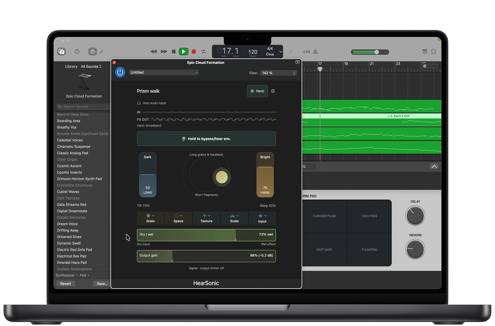
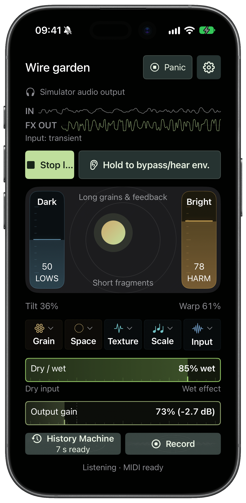
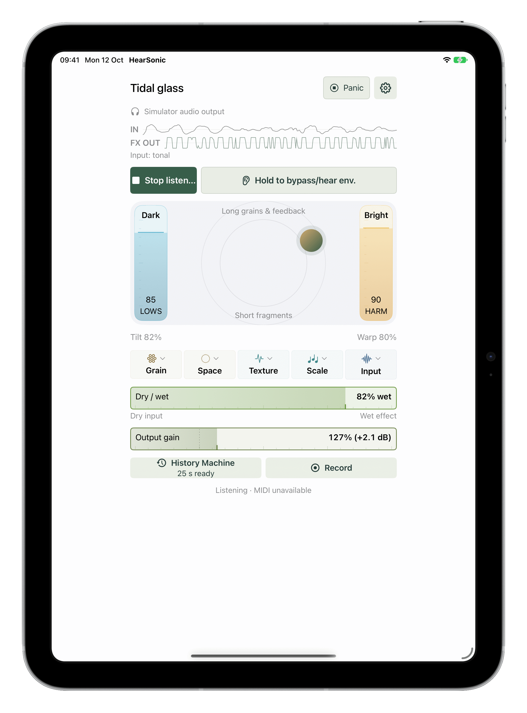
Live granular processor
Main screen
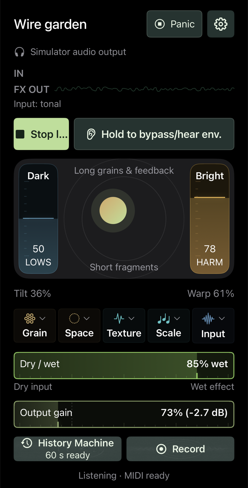
'Tilt' (Dark to Bright) and 'Warp' (short fragments to long grains and feedback). Side strips set low end and harmonics. Hold the bypass button to hear the room as it is temporarily.
Sessions and presets
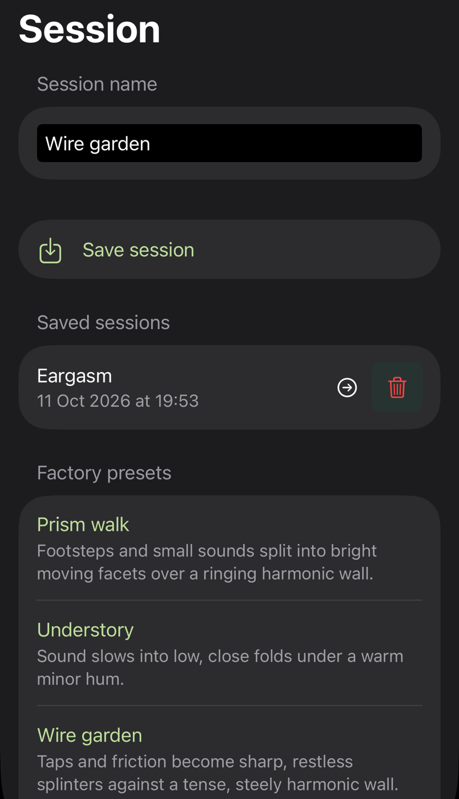
Save, load, rename and delete sessions. Factory presets are good starting points for textures, pads and rhythmic fragments, each with a short description.
Grain
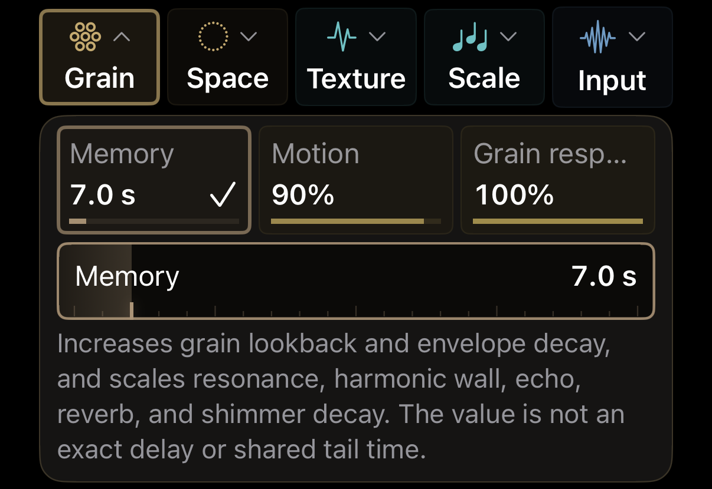
Memory sets grain lookback and tail length. Motion adds scan movement and stereo pulsing. Grain response sets grain level, density and onset sensitivity.
Input
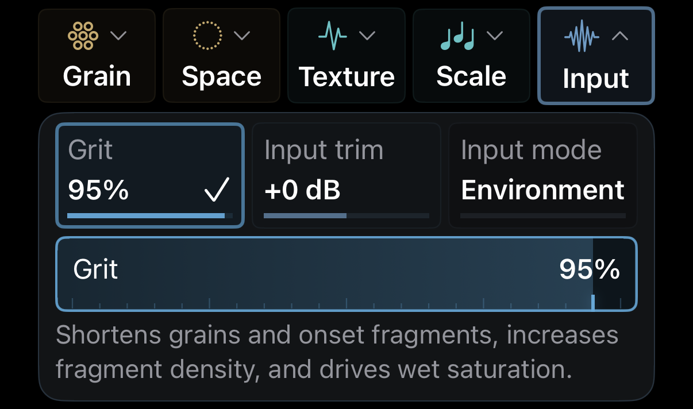
Grit shortens grains and adds saturation. Input mode: Environment for outdoor listening with an output limiter filters lowend noise, Signal accepts entire band mainly when hosted as FX.
Scale
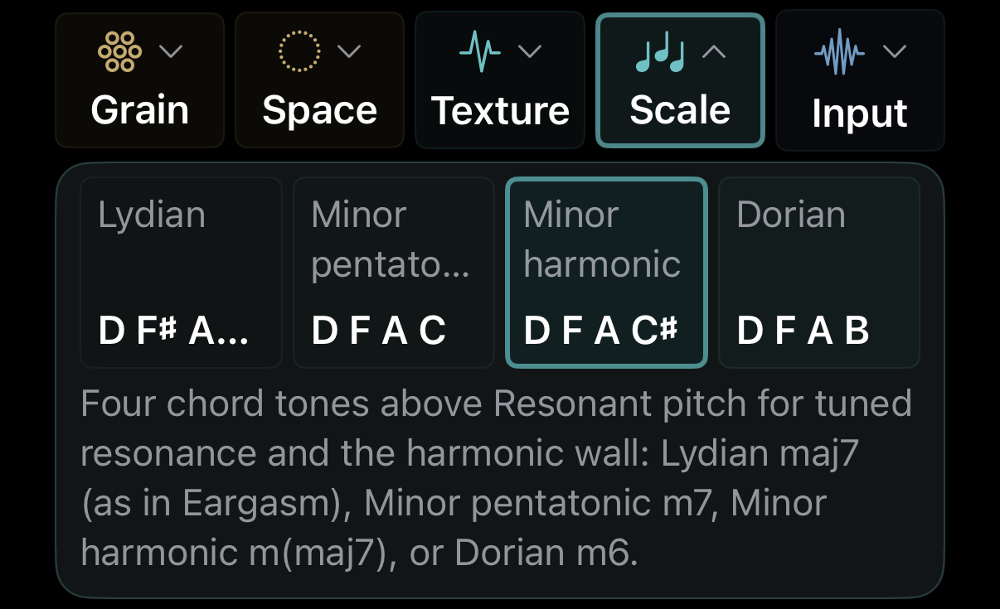
Four chord tones above Resonant pitch tune the resonance and the harmonic wall: Lydian maj7, minor pentatonic m7, harmonic minor m(maj7) or Dorian m6.
MIDI, recording and hosting
MIDI In
Notes set the chord root for resonance, play captured audio as pitched grains (velocity, pitch bend, pressure, MPE, CC 74 scrubs), or gate Echo, Space or Fragments while held.
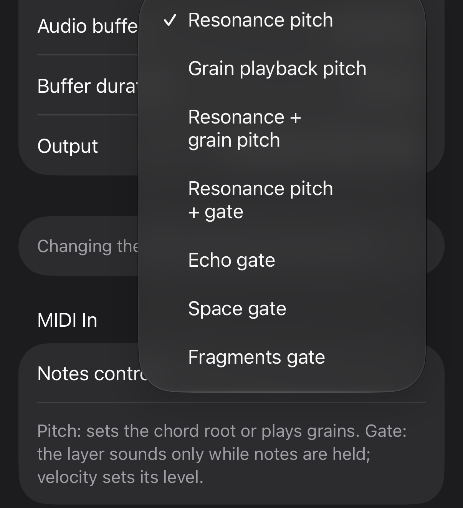
History Machine and Record
History Machine keeps the last 15 to 300 seconds of processed output, so a take can start before you press the button. Record starts from now. Stereo 24-bit WAV, saved via the system dialog.
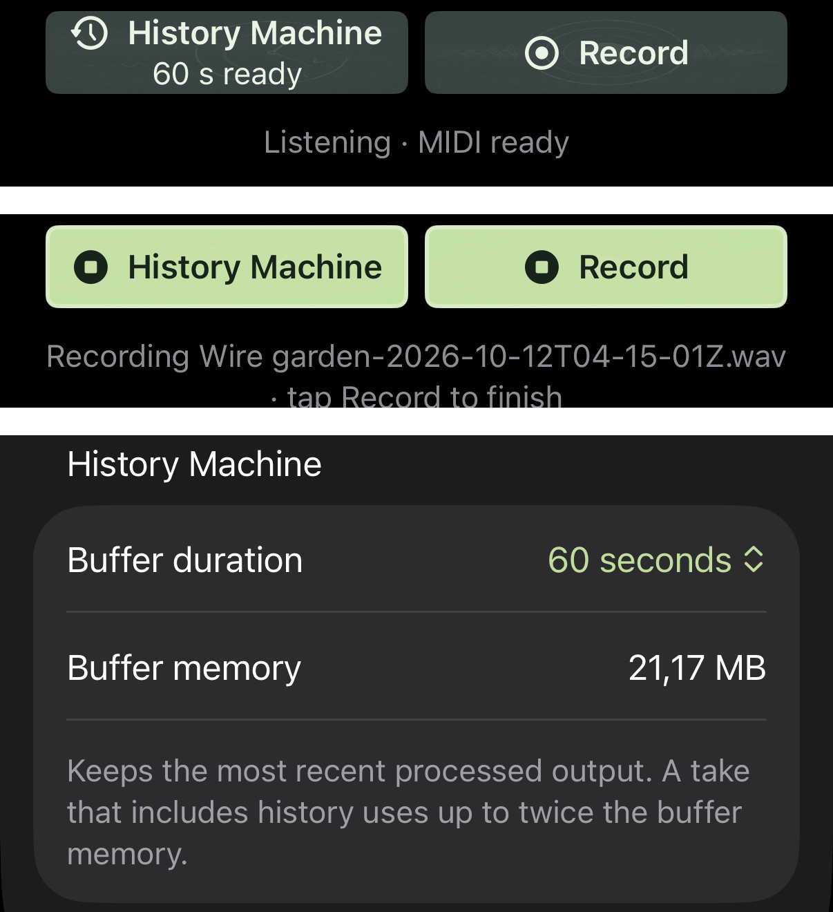
AUv3 in a host
Use it as an effect on instruments, tracks or audio files in any AUv3 host (here HostSonic μ on Mac). Host transport starts and stops processing, host bypass works like the bypass button.
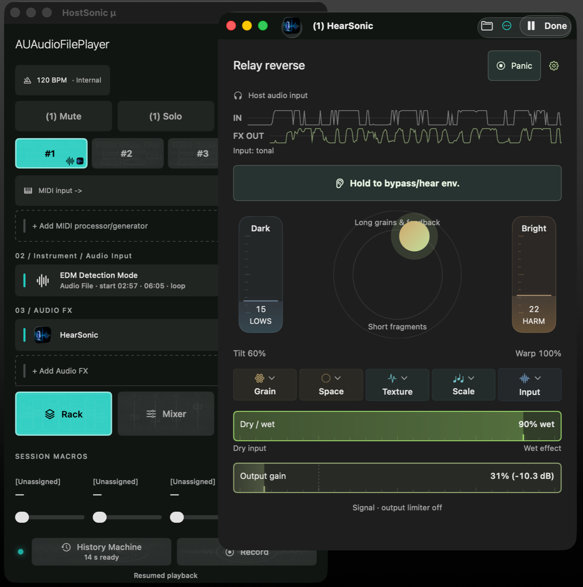
Available
Available as a standalone app and an AUv3 effect.Mac
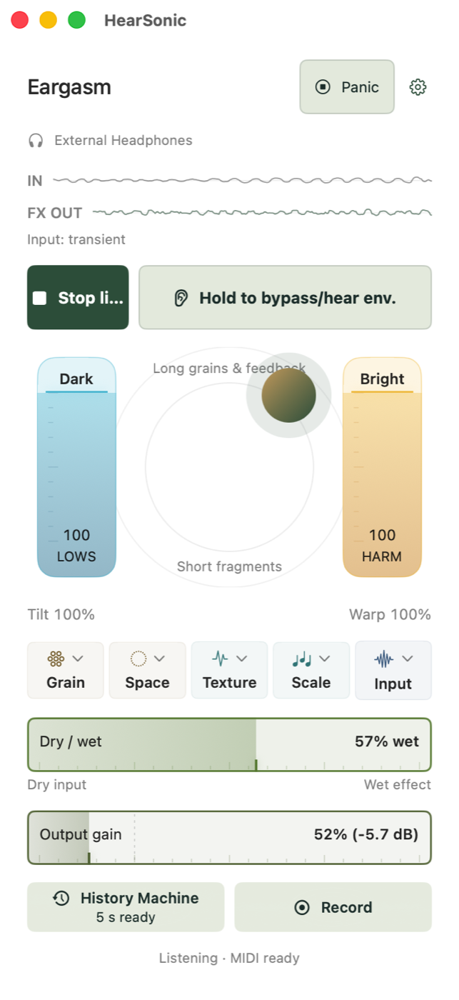
iPhone
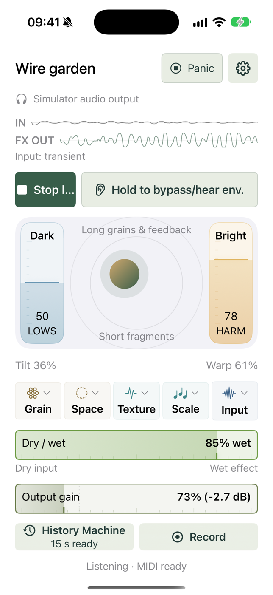
iPad
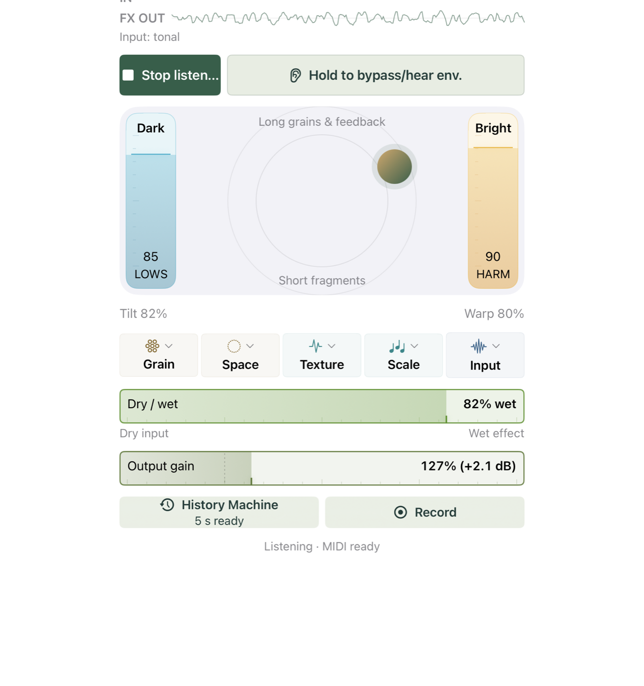
€8.99
One purchase includes all supported platforms.
For questions or support, contact me on X, Bluesky, or Threads.You can check out also loopypro/audiobus forums.